Events
New: We have Youtube Channel for GlucoGuide with live demo Now!
April 8, 2016: Dr. Charles Ling delivered a keynote speech at UWORCS
Western University professor Dr. Charles Ling, CEO of GlucoGuide, delivered a keynote speech "From Research to Prototype to Startup" on April 8, 2016, at UWORCS 2016.
See more...
February 25, 2016: GlucoGuide was interviewed by Londoner
Western University professor Dr. Charles Ling, CEO of GlucoGuide Corp., holds a smartphone running GlucoGuide on February 18, 2016, in London Ont. Developed by Ling and a growing team of 20, GlucoGuide is a diabetes management app that’s attracted $1 million in research and development funding since 2015.
See more...
Jan 29, 2016: GlucoGuide was interviewed by CTV News London
Video: GlucoGuide was interviewed by CTV News London. The interview aired January 29th, 2016 on the 6 o'clock News.
Jan 6, 2016: Endocrinology Grand Rounds at St Joseph's Health Care
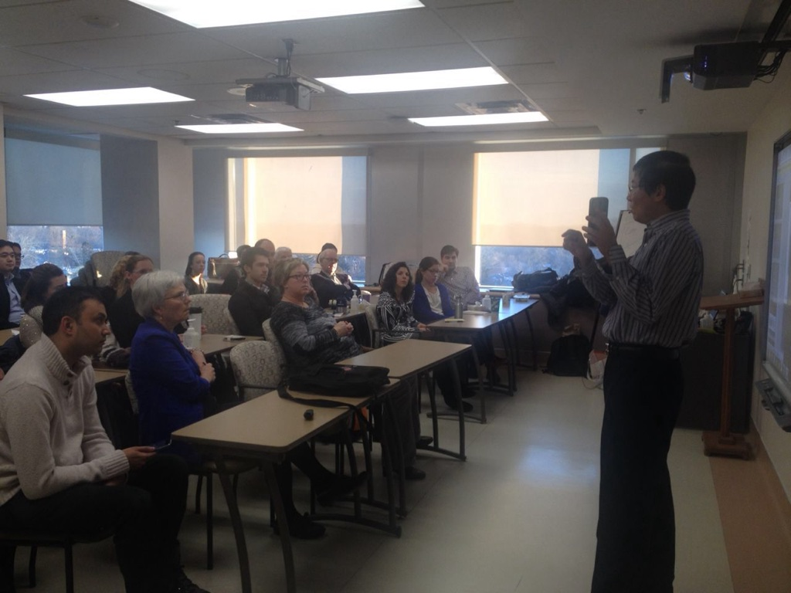
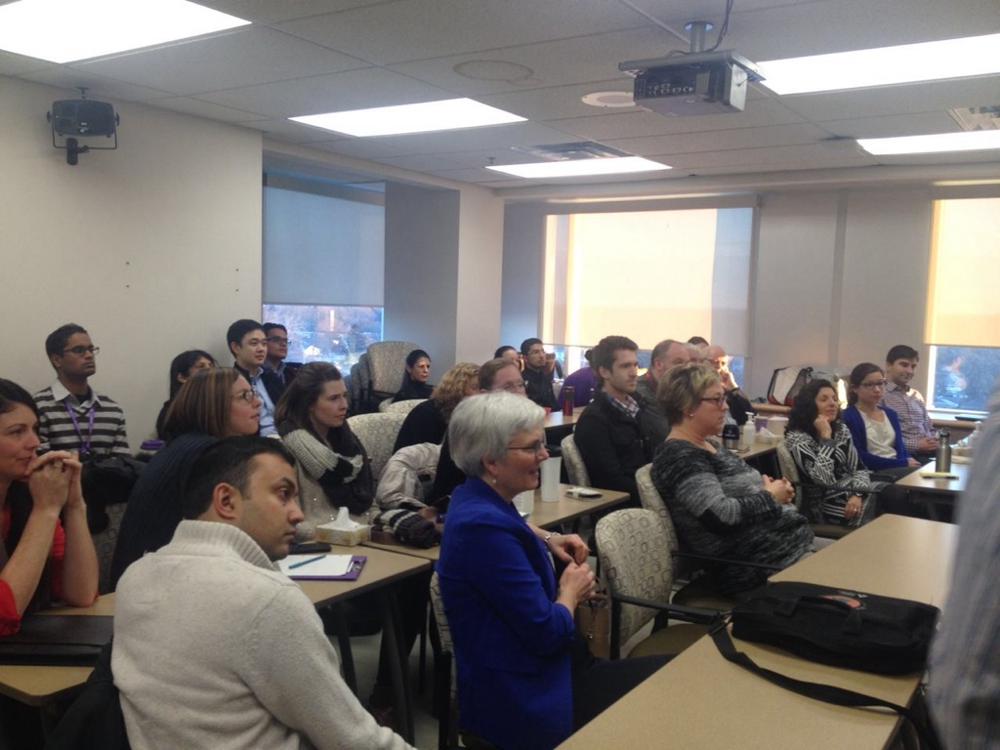
November 28, 2015: Canadian Diabetes Association and GlucoGuide joint seminar
Video: Charles Ling (PhD, CEO) is presenting Diabetes Care is in Your Hand with GlucoGuide.
November 12, 2015: Canadian Diabetes Association Expo at Toronto

Hockey Hall of Fame inductee Darryl Sittler stopped by the GlucoGuide tables to learn more about the mobile diabetes App from Dr. Charles Ling and his team. Darryl was recently diagnosed to have pre-diabetes.
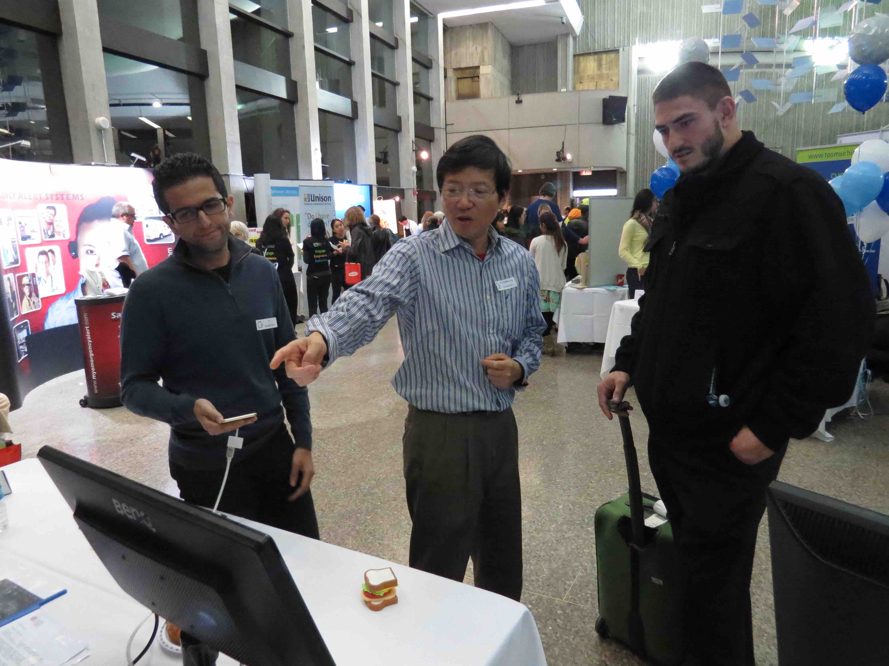
Dr. Charles Ling and his team are showing John Chick a live demo of the food recognition feature in GlucoGuide. John Chick, 2014 CFL All-Star, the West Division All-Star, the Riders Most Outstanding Player, Most Outstanding Defensive Player and two time Grey Cup Champion, was diagnosed with diabetes when he was 14 years old. John told GlucoGuide that about three years ago, he thought there could be a mobile diabetes app to better manage diabetes with photo recognition.
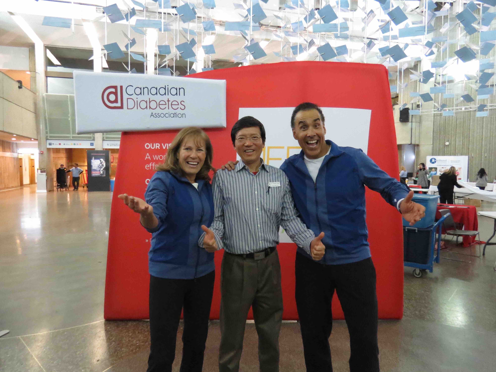
Getting really excited about healthy living for diabetes, with Hal Johnson and Joanne McLeod, Canada’s #1 Trusted Source for Healthy Living.
Team members from GlucoGuide show-case the GlucoGuide system. Shown in this picture, from left to right, Sid, Tracy, Yan, and Joy.

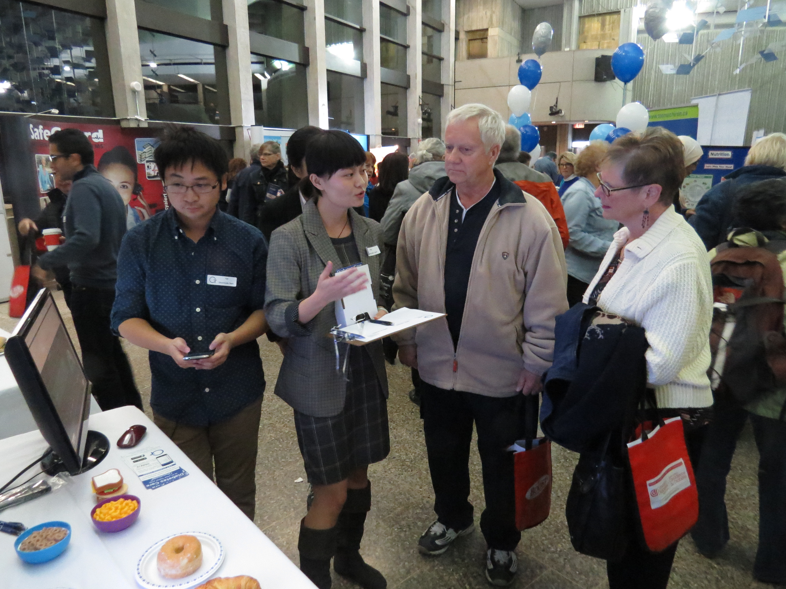
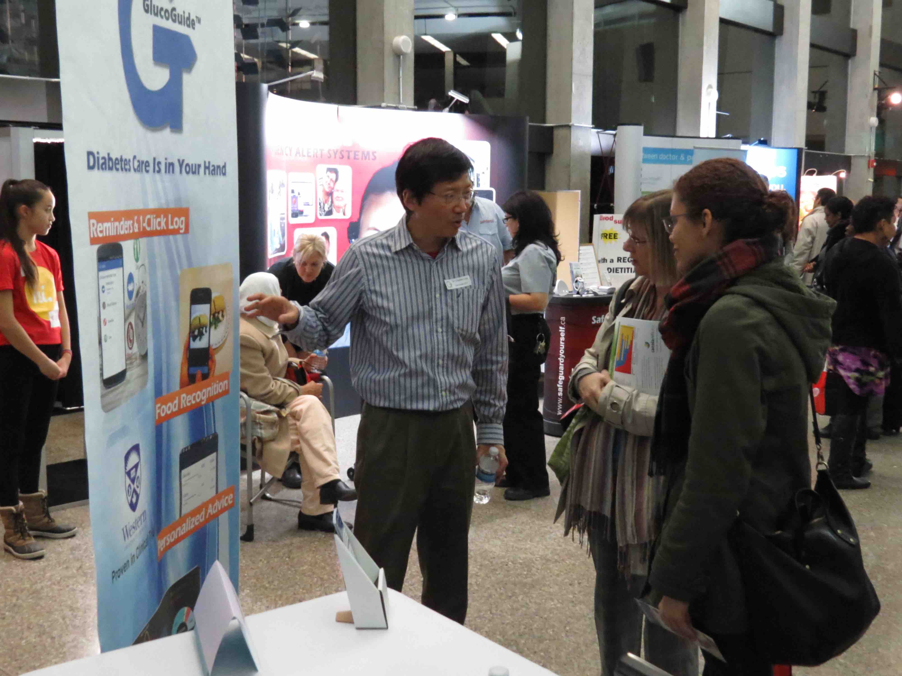
GlucoGuide was proud to participate in the Canadian Diabetes Association (CDA) Expo in Toronto. Taking place in select communities across Canada, these free expos are an empowering education event for people living with diabetes.
October 26, 2015: Diabetes Cooking Expo at Brantford
On October 26, 2015 The Canadian Diabetes Association hosted the Diabetes Fall Cooking Expo at the Best Western Brant Park Inn.
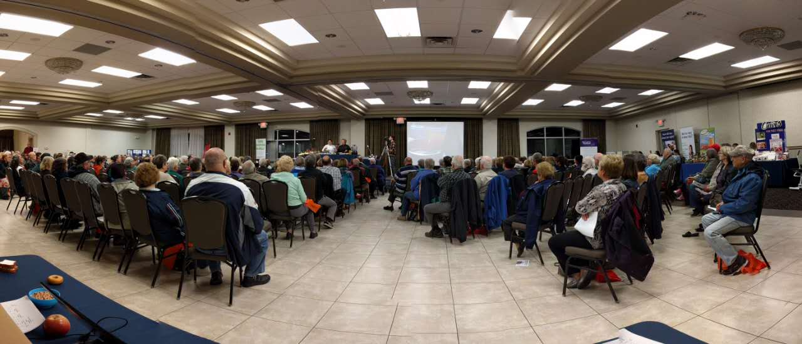
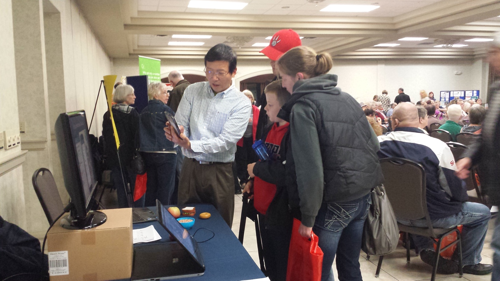
June 2, 2015: GlucoGuide New York branch has been formally announced
GlucoGuide New York branch has been formally announced by Governor Andrew M. Cuomo in New York State. See also at University at Buffalo and Buffalo Business First.
May 15, 2015: GlucoGuide has been formally launched
GlucoGuide, a research spinoff for diabetes management and wellness, has been formally launched in London Ontario. Over 60 people attended including researchers and healthcare managers from US, Toronto, KW, and London. Dignitaries included Mayor Matt Brown, Federal Minister of State for Science and Technology Ed Holder, and Western VP Research Dr. John Capone. London Free Press (LFP) also reported this event, entitled "INNOVATION: London researcher struggled with diabetes himself--New app helps diabetics manage"

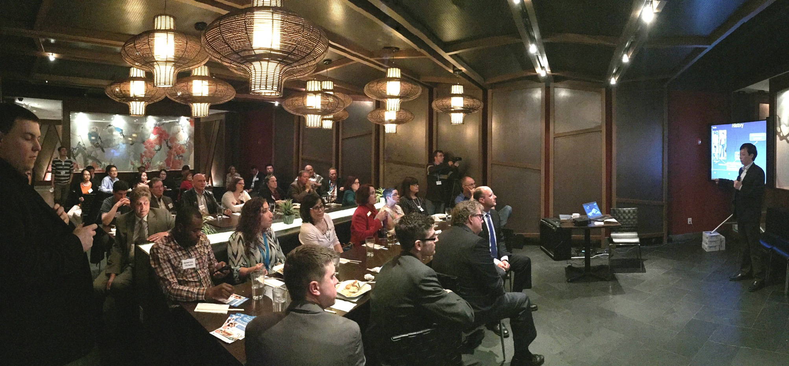
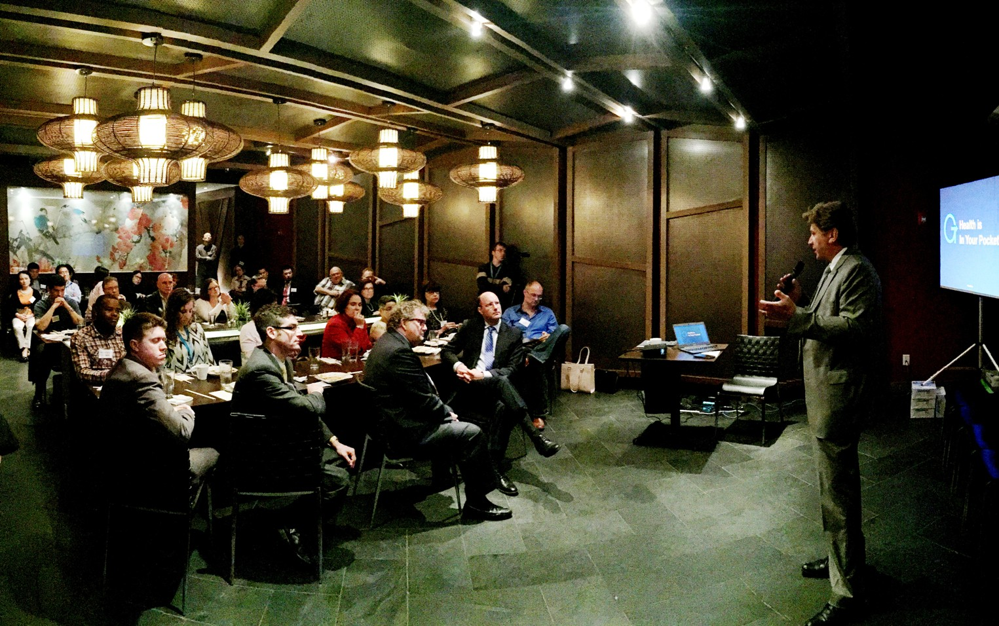
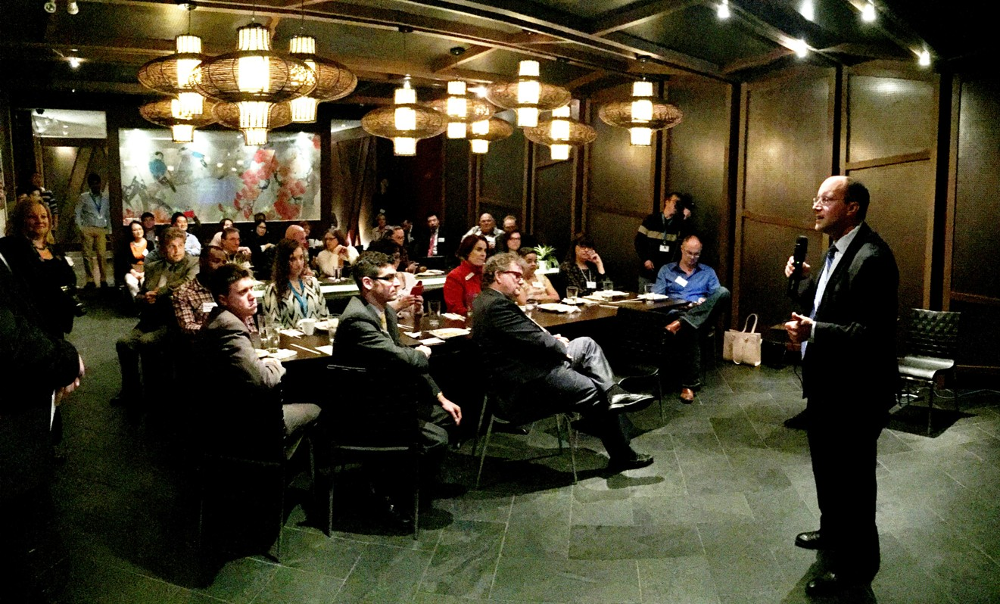